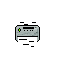

Podłączanie drukarki (urządzenia wielofunkcyjnego) do komputera. Rodzaje i parametry drukarek oraz skanerów.
Już po podłączeniu do prądu drukarka będzie działać, jeśli ma działać na USB, musi ono zostać podłączone zarówno do drukarki jak i komputera.
Po chwili komputer powinien wykryć nowe urządzenie. Jeśli tak się nie stało, znaczy to że będzie trzeba pobrać ze strony producenta drukarki jej sterowniki.
Po instalacji sterownika wchodzimy w Ustawienia>Urządzenia i w zakładce drukarki dodać nowe urządzenie.
Teraz wszystko powinno już działać i można spokojnie wydrukować stronę testową.
Tutaj znajdziesz przykładową instrukcję podłączenia i instalacji drukarki HP w systemie windows.
Rodzaje drukarek i skanerów

Drukarka atramentowa: Wprowadza treść/wzór na kartkę za pomocą tuszu
Drukarka laserowa: Wykorzystuje w procesie drukowania światło lasera lub diody LED.promień lasera odbity za pomocą wirującego lustra i zespołu soczewek, odwzoruje obraz na uprzednio naładowanym ujemnie lub dodatnio bębnie światłoczułym.
Drukarka termosublimacyjna: Nanosi wzór przy wykorzystaniu ciepła. Wykorzystywana przy druku zdjęć. Wymaga stosowania papieru fotograficznego oraz specjalnej folii.
Drukarka mozaikowa: Dzielimy na Igłowe: tusz jest nanoszony na kartkę za pomocą igieł. I na termiczne: Wydruki powstają poprzez zetknięcie głowicy z papierem termicznym, tym samym powodując jego zaczernienie w odpowiednich miejscach(potrzebuje specjalnego papieru termicznego ciemniejącego pod wpływem temperatury).
Najważniejszymi parametrami drukarek są:
jakość druku
prędkość druku
rozdzielczość
ilość zainstalowanej pamięci
Rodzaj łącza
minimalny i maksymalny format nośnika
zasobność podajnika papieru
możliwość drukowania dwustronnego
Skanery
Rodzaje skanerów:
Skaner ręczny-
Skaner płaski
Skaner bębnowy
Skaner do slajdów
Skaner do filmów
Skaner kodów kreskowych
Skaner 3D
Skaner lustrzany
Skaner pryzmatowy
Skaner światłowodowy
Parametrami skanerów jest:
Rozdzielczość optyczna- ilość faktycznych informacji, które system optyczny może próbkować.
Rozdzielczość interpolowana- pozorna ilość informacji uzyskanych przez skaner w procesie przechwytywania
wspomaganego algorytmami sprzętowymi lub programowymi.
Rozdzielczość bitowa- Głębia barw, określa zdolność skanera do rozróżniania stopni jasności skanowanego obrazu.